ApacheDrill对接FusionInsight¶
适用场景¶
ApacheDrill 1.17.0 ↔ FusionInsight HD 6.5 (HDFS/Hive/HBase/Kafka)
ApacheDrill 1.17.0 ↔ FusionInsight MRS 8.0 (HDFS/Hive/HBase/Kafka)
说明¶
ApacheDrill安装主机：172.16.9.107
FI HD 集群： 172.16.4.131-133
配置Oracle JDK¶
说明：启动drill要使用oracle的jdk，否则会报错
- 登陆oracle官网，找到合适系统的JDK版本

-
将安装rpm包导入至drill安装主机/usr/java路径下，如果没有此路径需创建
-
使用如下命令安装：
chmod +x jdk-8u231-linux-x64.rpm
rpm -ivh jdk-8u231-linux-x64.rpm
- 参考下面配置，在
~/.bash_profile配置文件最后增加：
export JAVA_HOME=/usr/java/jdk1.8.0_231-amd64
export CLASSPATH=$CLASSPATH:$JAVA_HOME/lib:$JAVA_HOME/jre/lib
PATH=$JAVA_HOME/bin:$PATH:$HOME/bin
export PATH
export LD_LIBRARY_PATH=/usr/java/jdk1.8.0_231-amd64/jre/lib/amd64/server/libjvm.so:/usr/java/jdk1.8.0_231-amd64/jre/lib/amd64/usr/java/jdk1.8.0_231-amd64/jre/lib/amd64/libjsig.so:$LD_LIBRARY_PATH
export LD_LIBRARY_PATH=/usr/local/lib:$LD_LIBRARY_PATH
- 使用命令加载安装的jdk：
source ~/.bash_profile
安装Apache Drill¶
- 下载ApacheDrill
或者从官网下载:

- 安装drill
将安装包导入/opt/drill路径下，使用命令tar -xvf apache-drill-1.17.0.tar.gz解压压缩包
- 启动drill
cd /opt/drill/apache-drill-1.17.0 bin/drill-embedded
同时可以登录 172.16.9.107:8047 来查看webUI界面

提示：如果启动过程遇到报错Area [/root/drill/udf/registry] must be writable and executable for application user,使用如下命令更改指定目录的权限
cd root
chmod -R 777 drill/
对接HDFS¶
-
确保apachedrill主机与对接集群时间差异小于5分钟
-
在apachedrill主机上安装对接集群客户端
-
（重要）在对接集群客户端中找到core-site.xml文件导入到drill安装路径/conf目录下，并且修改配置项
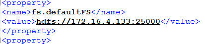
-
找到 apacchedrill安装路径/bin/drill-config.sh 配置文件，做如下修改：
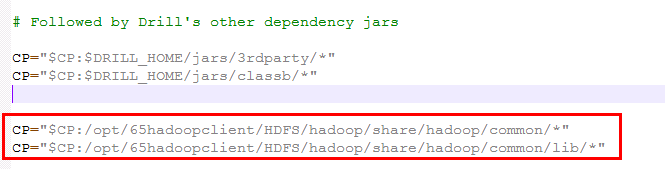
CP="$CP:/opt/65hadoopclient/HDFS/hadoop/share/hadoop/common/*"
CP="$CP:/opt/65hadoopclient/HDFS/hadoop/share/hadoop/common/lib/*"
说明：
1. 在如图位置添加Class Path变量,路径为华为FI HD HDFS客户端相关依赖的路径
2. 添加依赖参数的位置要按照截图所示，在 CP="$CP:$DRILL_HOME/jars/3rdparty/*"之后`
- 登陆drill webUI 界面，选择Storage,创建新的huaweihdfs
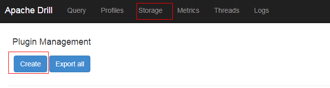
内容如下：
{
"type": "file",
"connection": "hdfs://172.16.4.133:25000/",
"config": null,
"workspaces": {
"tmp": {
"location": "/tmp",
"writable": true,
"defaultInputFormat": null,
"allowAccessOutsideWorkspace": false
}
},
"formats": {
"json": {
"type": "json",
"extensions": [
"json"
]
}
},
"enabled": true
}

其中172.16.4.133为集群namenode主节点
- 准备认证相关配置文件
登陆对接集群主节点172.16.4.131:/opt路径,使用命令find /opt -name hdfs.keytab查找hdfs认证相关keytab文件

将hdfs.keytab文件scp拷贝到apachedrill主机/opt路径下
准备对接集群相关的krb5.conf文件（可从manager下载），复制到apachedrill主机/etc路径下并覆盖，apachedrill默认从/etc/路径下读取krb5.conf文件
-
在对接集群HDFS客户端中找到HDFS相关core-site.xml配置文件，拷贝到drill安装路径下的conf目录下，并对配置文件做如下修改：
-
找到参数项fs.defaultFS,将值改为namenode主节点ip+25000的形式：
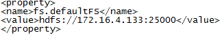
保存修改
-
修改drill conf路径下的配置文件drill-override.conf，做如下修改并保存:
security.auth.principal: "hdfs/hadoop.hadoop.com@HADOOP.COM" security.auth.keytab: "/opt/hdfs.keytab"
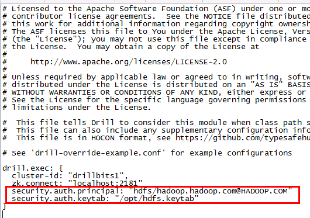
- 在对接集群的/tmp路径下创建json格式的测试数据test.json
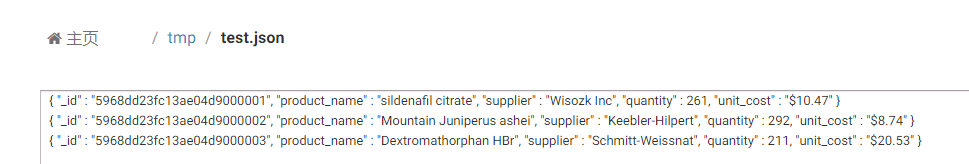
内容如下：
{ "_id" : "5968dd23fc13ae04d9000001", "product_name" : "sildenafil citrate", "supplier" : "Wisozk Inc", "quantity" : 261, "unit_cost" : "$10.47" }
{ "_id" : "5968dd23fc13ae04d9000002", "product_name" : "Mountain Juniperus ashei", "supplier" : "Keebler-Hilpert", "quantity" : 292, "unit_cost" : "$8.74" }
{ "_id" : "5968dd23fc13ae04d9000003", "product_name" : "Dextromathorphan HBr", "supplier" : "Schmitt-Weissnat", "quantity" : 211, "unit_cost" : "$20.53" }
- 使用命令
!quit停止drill,再重启drill
在命令行使用命令show databases;检查数据库：

使用命令select * from huaweihdfs.`tmp`.`test.json`;查找数据：

对接HIVE¶
-
参考上述《对接HDFS》章节完成对接drill 1.17.0版本与FI HD的对接，因为对接hdfs是连接hive的基础，所以需要完成此步骤
-
在对接集群客户端中找到hdfs-site.xml以及yarn-site.xml文件导入到drill安装路径/conf目录下（core-site.xml配置文件在对接HDFS的时候已经导入，并且修改过fs.defaultFS配置项）：

并且对hdfs-site.xml配置文件做如下修改:
找到配置项dfs.client.failover.proxy.provider.hacluster，将值改为org.apache.hadoop.hdfs.server.namenode.ha.ConfiguredFailoverProxyProvider
<property>
<name>dfs.client.failover.proxy.provider.hacluster</name>
<value>org.apache.hadoop.hdfs.server.namenode.ha.ConfiguredFailoverProxyProvider</value>
</property>
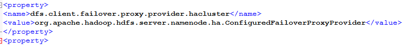
- 登陆对接FI HD集群172.16.4.131， 使用如下命令找到对接hive相关认证keytab文件hive.keytab并把此文件传至drill主机/opt路径下：
find /opt -name hive.keytab

将hive.keytab文件scp拷贝到apachedrill主机/opt路径下
-
登陆drill主机，准备对接集群相关的krb5.conf文件（可从manager下载），复制到drill主机/etc路径下并覆盖，apachedrill默认从/etc/路径下读取krb5.conf文件，如果此步之前做过可以不做
-
修改drill安装路径/conf/drill-override.conf配置文件如下：
drill.exec: { cluster-id: "drillbits1", zk.connect: "localhost:2181" security.auth.principal: "hive/hadoop.hadoop.com@HADOOP.COM" security.auth.keytab: "/opt/hive.keytab" sys.store.provider.local.path = "/home/drill" }
-
重启drill,登陆drill WebUI,创建新的storage名字为huaweihive并enable，内容如下：
{
"type": "hive",
"configProps": {
"hive.metastore.uris": "thrift://172.16.4.131:21088,thrift://172.16.4.132:21088",
"hive.metastore.kerberos.principal": "hive/hadoop.hadoop.com@HADOOP.COM",
"hive.metastore.sasl.enabled": "true",
"fs.default.name": "hdfs://172.16.4.133:25000",
"inputDirectories": "hdfs://172.16.4.133:25000"
},
"enabled": true
}
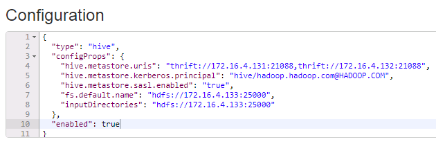
其中hive.metastore.uris可在集群hive-site.xml文件中查到
- 后台登陆drill，使用
show databases命令查看数据库：
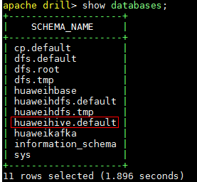
- 使用如下命令查表
use huaweihive.`default`;
show tables;
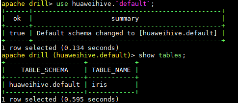
使用命令show tables;查看hive表：

使用查询命令查询hive表：
select * from huaweihive.`default`.`iris`;
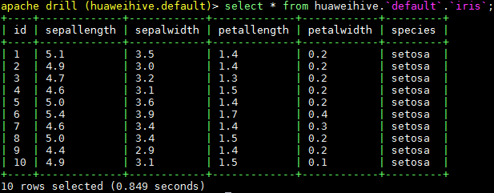
对接kafka¶
对接参考drill官方文档：https://drill.apache.org/docs/kafka-storage-plugin/ 可以知道支持的kafka读取数据结构只能为json：

- 准备topic
登陆对接集群kafka客户端，使用如下命令创建一个新的topic：
bin/kafka-topics.sh --create --zookeeper 172.16.4.131:24002,172.16.4.132:24002,172.16.4.133:24002/kafka --partitions 2 --replication-factor 2 --topic druidkafka
使用如下命令生产数据：
bin/kafka-console-producer.sh --broker-list 172.16.4.131:21007,172.16.4.132:21007,172.16.4.133:21007 --topic druidkafka --producer.config config/producer.properties
输入三条测试数据：
{ "_id" : "5968dd23fc13ae04d9000001", "product_name" : "sildenafil citrate", "supplier" : "Wisozk Inc", "quantity" : 261, "unit_cost" : "$10.47" }
{ "_id" : "5968dd23fc13ae04d9000002", "product_name" : "Mountain Juniperus ashei", "supplier" : "Keebler-Hilpert", "quantity" : 292, "unit_cost" : "$8.74" }
{ "_id" : "5968dd23fc13ae04d9000003", "product_name" : "Dextromathorphan HBr", "supplier" : "Schmitt-Weissnat", "quantity" : 211, "unit_cost" : "$20.53" }
- 启动apachedrill,登陆webUI,点击Storage创建huaweikafka,点击enable，内容如下：

{
"type": "kafka",
"kafkaConsumerProps": {
"key.deserializer": "org.apache.kafka.common.serialization.ByteArrayDeserializer",
"auto.offset.reset": "earliest",
"bootstrap.servers": "172.16.4.131:21005,172.16.4.132:21005,172.16.4.133:21005",
"group.id": "drill-query-consumer-1",
"enable.auto.commit": "true",
"value.deserializer": "org.apache.kafka.common.serialization.ByteArrayDeserializer",
"session.timeout.ms": "30000"
},
"enabled": true
}
- 后台命令行输入
show databases;检查数据库
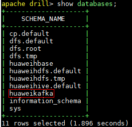
输入命令use huaweikafka;使用数据库
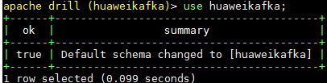
输入命令show tables;查看topic
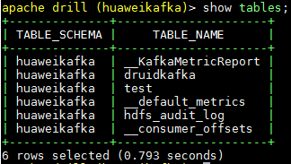
输入命令select * from druidkafka;查询刚刚创建的kafka topic

对接HBase¶
-
停止正在运行的drill
-
参考前文《对接HDFS》,《对接HIVE》章节，成功配置好对接hdfs,hive组件
-
找到drill安装目录下./jar/ext/路径，将drill自带的zookeeper-3.4.12.jar重命名为zookeeper-3.4.12.jar.org注释掉，并将FI HD客户端中zookeeper相关jar包 zookeeper-3.5.1.jar拷贝到该路径下。这一步的目的是，drill自带的zookeeper-3.4.12.jar版本太旧，其内部没有定义send4LetterWord方法，该方法是向FI HD zookeeper服务自动获取连接zookeeper的service principal (zookeeper/hadoop.hadoop.com@HADOOP.COM)
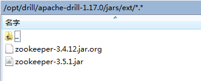
说明：（重要）如果对接的是mrs 8.0版本，则需要替换的Jar包为zookeeper-3.5.6-hw-ei-301001-SNAPSHOT.jar，zookeeper-jute-3.5.6-hw-ei-301001-SNAPSHOT.jar
-
在/opt路径下准备jass.conf文件，内容如下，其中/opt/user.keytab为用户developuser的认证文件：
Client { com.sun.security.auth.module.Krb5LoginModule required useKeyTab=true principal="developuser@HADOOP.COM" keyTab="/opt/user.keytab" useTicketCache=false storeKey=true debug=true; }; -
启动drill之前使用如下命令加载进必要的JVM参数：
export JAVA_TOOL_OPTIONS="-Xmx512m -Xms64m -Djava.security.auth.login.config=/opt/jaas.conf -Dkerberos.domain.name=hadoop.hadoop.com -Djava.security.krb5.conf=/etc/krb5.conf -Dzookeeper.server.principal=zookeeper/hadoop.hadoop.com -Dsun.security.krb5.debug=false"
完成之后使用命令java -version检查是否加载成功
-
将HBase客户端包含的配置文件hbase-site.xml拷贝到drill安装路径下的conf目录下
-
启动drill，登陆drill webUI，添加Storage名字为huaweihbase并enable,内容如下：
{
"type": "hbase",
"config": {
"hbase.zookeeper.quorum": "172.16.4.131,172.16.4.132，172.16.4.133",
"hbase.zookeeper.property.clientPort": "24002"
},
"size.calculator.enabled": false,
"enabled": true
}

- 登陆drill后台，使用命令
use huaweihbase;使用数据库：

使用命令show tables;查看hbase表：
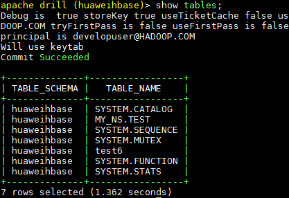
使用命令select * from test6;查看hbase表：
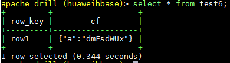
FAQ¶
问题：对接hdfs的时候遇到问题，具体是配置好huaweihdfs之后在后台使用show databases;查看的时候报错：

Caused by: javax.security.sasl.SaslException: No common protection layer between client and server
at com.sun.security.sasl.gsskerb.GssKrb5Client.doFinalHandshake(GssKrb5Client.java:251)
问题原因：hadoop.rpc.protection的配置存在客户端与服务端不一致的情况
发现在对接Hdfs的时候没有像hive那样导入客户端配置文件，所以我就把hdfs的core-site hdfs-site配置文件导入到drill的conf目录下， 检查hadoop.rpc.protection配置和集群的匹配，重启drill就可以解决这个问题
问题: 对接hbase的时候照上面的文档搞，对接不上
原因：hbase-site.xml文件要放到conf路径下
问题：
起drill的时候起不起来：

解决办法：不要使用huawei的jdk,使用oracle的jdk可以起